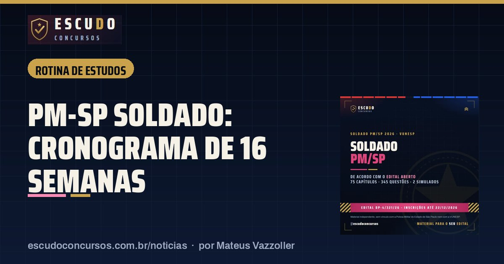
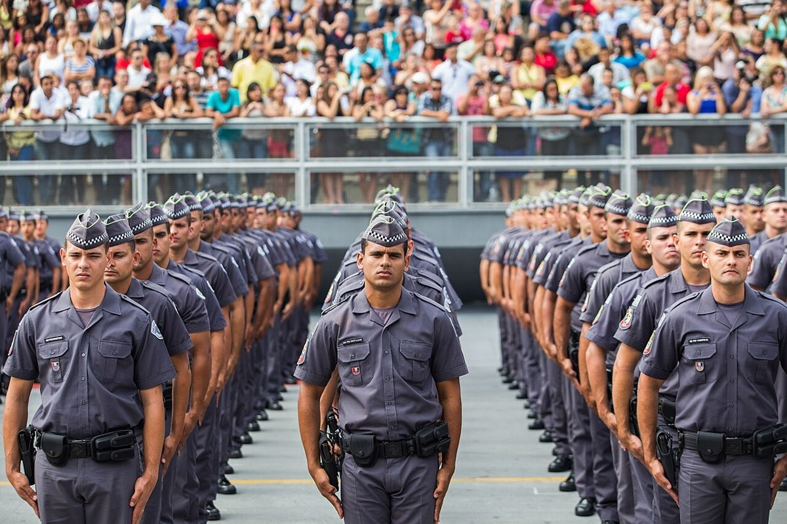

Cronograma de estudos para PM-SP Soldado: 16 semanas até a prova de 28/02/2027
Rotina de estudosPublicado em 8 de novembro de 2026 · por Mateus Vazzoller, ESCUDO Concursos

Entre segunda-feira, 09/11/2026, e a prova prevista para 28/02/2027 há 16 semanas. Este plano reparte 15 horas por semana entre as matérias na proporção das questões do edital e divide o tempo em três fases: base, questões e simulados.
| Prova (prevista) | 28/02/2027, à tarde, 5 horas |
|---|---|
| Tempo até a prova | 16 semanas a partir de 09/11/2026 |
| Carga sugerida | 15 horas por semana |
| Fases | Base (semanas 1 a 8), questões (9 a 13), simulados (14 a 16) |
| Prova objetiva | 60 questões, mínimo de 30 pontos |
| Redação | Até 30 linhas, 40 pontos, mínimo de 20 |
De onde vêm as horas
A prova objetiva tem 60 questões, cada uma valendo 1 ponto, e a redação vale 40 pontos. O tempo semanal segue esse peso:
| Matéria | Questões na prova | Horas por semana |
|---|---|---|
| Língua Portuguesa e Interpretação de Texto | 20 | 4h |
| Matemática | 15 | 3h30 |
| Conhecimentos Gerais | 15 | 3h |
| Noções de Administração Pública | 5 | 1h30 |
| Noções Básicas de Informática | 5 | 1h |
| Redação (até 30 linhas, 40 pontos) | 1 texto | 2h |
| Total | 15h |
Administração Pública ganha meia hora a mais que Informática porque cobra artigo de lei (Constituição Federal, Constituição do Estado, Lei de Acesso à Informação e Decreto estadual nº 68.155/2023), que pede leitura atenta do texto.

Fase 1: base (semanas 1 a 8, de 09/11/2026 a 03/01/2027)
- Comece por Português e Matemática, que somam 35 das 60 questões e garantem os 30 pontos mínimos da objetiva.
- Em Conhecimentos Gerais, um eixo por semana: Primeira e Segunda Guerra, Guerra Fria, Era Vargas, período militar, redemocratização, globalização, Geografia do Brasil.
- Reserve 30 minutos por semana para Atualidades, com fatos desde 6 meses antes da publicação do edital (05/11/2026).
- Uma redação por semana, já no limite de 21 a 30 linhas.
Fase 2: questões (semanas 9 a 13, de 04/01 a 07/02/2027)
- Troque metade do tempo de teoria por questões de cinco alternativas no estilo da VUNESP.
- Anote cada erro com o tema e volte nele na semana seguinte.
- Duas redações por semana, com temas variados.
Fase 3: simulados (semanas 14 a 16, de 08/02 a 28/02/2027)
- Um simulado completo por fim de semana: 60 questões e redação em 5 horas, no horário da tarde, como no dia da prova.
- Nos dias úteis, só revisão dos erros e da lei seca de Administração Pública.
- Entre 15 e 19/02/2027 acompanhe a convocação com data, horário e local da prova no Diário Oficial do Estado.
Se você tem menos tempo
Com 8 horas por semana, mantenha a mesma proporção: Português 2h, Matemática 2h, Conhecimentos Gerais 1h30, Administração Pública 1h, Informática 30 minutos e redação 1h. Não corte a redação: ela vale 40 dos 100 pontos da classificação.
Curso ESCUDO Soldado da Polícia Militar de São Paulo em PDF: 75 capítulos e 345 questões, de acordo com o edital aberto, 2 simulados de 60 questões. De R$ 47 por R$ 37 com o cupom PMESP37 até 22/12/2026.
Ver o curso
Perguntas frequentes
Quantas horas por dia preciso estudar para a PM-SP?
Este plano usa 15 horas por semana: 2 horas nos dias úteis e 5 horas no fim de semana. Com 8 horas por semana ainda dá, mantendo a mesma proporção entre as matérias.
Qual matéria estudar primeiro?
Português e Matemática, que somam 35 das 60 questões da objetiva e garantem os 30 pontos mínimos para ter a redação corrigida.
Quando começar os simulados?
Na semana 14, a partir de 08/02/2027: um simulado completo de 5 horas por fim de semana, no horário da tarde.
Leia também
- Rotina de estudosCronograma de estudos PC-AC Oficial Investigador: 10 semanas até a prova de 24/01/2027
13 de novembro de 2026 · Plano de 10 semanas para a prova da PC-AC de 24/01/2027: horas pelo peso do edital IDECAN, Específicos primeiro, discursiva toda semana e simulados de 5 horas.
- NotíciaPM-SP Soldado 2026: inscrições abrem 09/11 e o prazo da isenção é só até 11/11
8 de novembro de 2026 · Inscrições do concurso PM-SP Soldado 2026 abrem em 09/11 às 10h no site da VUNESP. Pedido de isenção ou redução da taxa só até 11/11. Veja prazos e regras.
Guia completo do concurso: edital, vagas e o que cai · Mais notícias e dicas de concursos